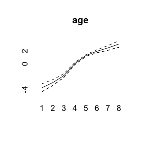
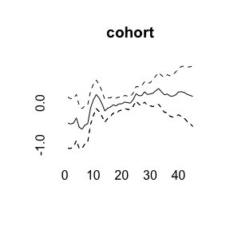
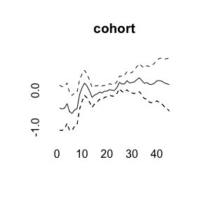

Short Introduction to BAMP
Volker Schmid
2025-03-26
Source:vignettes/largevignettes/bamp.Rmd
bamp.RmdData example
BAMP includes a data example.
data(apc)
plot(cases[,1],type="l",ylim=range(cases), ylab="cases", xlab="year", main="cases per age group")
for (i in 2:8)lines(cases[,i], col=i)
For simulating APC data, see vignette(“simulation”, package=“bamp”).
APC model with random walk first order prior
model1 <- bamp(cases, population, age="rw1", period="rw1", cohort="rw1",
periods_per_agegroup = 5)bamp() automatically performs a check for MCMC convergence using Gelman and Rubin’s convergence diagnostic. We can manually check the convergence again:
checkConvergence(model1)## [1] TRUENow we have a look at the model results. This includes estimates of smoothing parameters and deviance and DIC:
print(model1)##
## Model:
## age (rw1) - period (rw1) - cohort (rw1) model
## Deviance: 231.29
## pD: 37.01
## DIC: 268.30
##
##
## Hyper parameters: 5% 50% 95%
## age 0.369 0.885 1.898
## period 69.821 205.722 635.311
## cohort 33.044 57.954 95.820
##
##
## Markov Chains convergence checked succesfully using Gelman's R (potential scale reduction factor).We can plot the main APC effects using point-wise quantiles:
plot(model1) 

More quantiles are possible:


For other models see vignette(“modeling”,package=“bamp”).
Prediction
Using the prior assumption of a random walk for the period and cohort effect, one can predict cases for upcoming years.
pred <- predict_apc(object=model1, periods=3)
m<-max(pred$pr[2,,])
plot(pred$pr[2,,8],type="l", ylab="probability", xlab="year", ylim=c(0,m))
for (i in 7:1)
lines(pred$pr[2,,i],col=8-i)
legend(1,m,col=8:1,legend=paste("Age group",1:8),lwd=2,cex=0.6)
lines(c(10.5,10.5),c(0,1),lty=2)
More details see vignette(“prediction”,package=“bamp”).